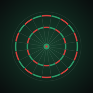

Datenschutz
Datenschutzerklärung für die App Dardo
Kurz gesagt: Dardo erhebt keine personenbezogenen Daten. Es gibt kein Konto, keine Werbung, kein Tracking und keine Analyse-Tools. Die App sendet keine Daten an uns.
Verantwortlich
Salvatore Sicilia
Egenkamp 43
38448 Wolfsburg
Deutschland
dardo.support@gmail.com
Daten auf deinem Gerät
Lernfortschritt, Einstellungen und dein Spielername (falls du einen eingibst) werden nur auf deinem Gerät gespeichert. Wenn du die App löschst, werden diese Daten gelöscht.
iPhone: iCloud
Wenn iCloud auf deinem iPhone eingeschaltet ist, legt die App Fortschritt und Rekorde zusätzlich in deinem eigenen iCloud-Konto bei Apple ab, damit sie auf ein neues iPhone mitkommen. Wir haben darauf keinen Zugriff. Es gilt die Datenschutzrichtlinie von Apple. Die Kopie in iCloud kannst du unter Einstellungen → dein Name → iCloud → Speicher verwalten löschen.
Android: Sicherung
Wenn die Android-Sicherung auf deinem Handy eingeschaltet ist, kann Android die App-Daten in deinem eigenen Google-Konto sichern, damit sie auf ein neues Handy mitkommen. Wir haben darauf keinen Zugriff. Es gilt die Datenschutzerklärung von Google.
Mitteilungen
Wenn du die tägliche Erinnerung einschaltest, plant die App eine lokale Mitteilung auf deinem Gerät. Dafür werden keine Daten an Server gesendet.
Käufe
Der Kauf von Dardo Pro wird vollständig von Apple (App Store) bzw. Google (Google Play) abgewickelt. Wir erhalten keine Zahlungsdaten und keine persönlichen Daten zum Kauf.
Teilen
Wenn du ein Ergebnis teilst, entscheidest du selbst, mit welcher App und mit wem.
E-Mail an den Support
Wenn du uns eine E-Mail schreibst, verwenden wir deine Adresse und deine Nachricht nur, um dir zu antworten (Art. 6 Abs. 1 lit. b und f DSGVO). Die E-Mail-Adresse wird bei Google (Gmail) betrieben. Wir löschen die Nachrichten, wenn die Anfrage erledigt ist und keine Aufbewahrungspflicht besteht.
Diese Webseite
Diese Seite wird bei GitHub Pages (GitHub, Inc., USA) gehostet. Beim Aufruf verarbeitet GitHub technisch notwendige Daten wie deine IP-Adresse, um die Seite auszuliefern und vor Angriffen zu schützen. Wir setzen keine Cookies und keine Analyse-Tools ein. Mehr dazu in der Datenschutzerklärung von GitHub.
Deine Rechte
Du hast das Recht auf Auskunft, Berichtigung, Löschung, Einschränkung der Verarbeitung, Datenübertragbarkeit und Widerspruch. Schreib dafür an dardo.support@gmail.com. Außerdem kannst du dich bei einer Datenschutz-Aufsichtsbehörde beschweren, zum Beispiel bei der Landesbeauftragten für den Datenschutz Niedersachsen.
Kinder
Dardo sammelt auch von Kindern keine Daten.
Stand: Oktober 2026
Privacy policy for the Dardo app
In short: Dardo does not collect any personal data. There is no account, no advertising, no tracking and no analytics. The app sends no data to us.
Controller
Salvatore Sicilia
Egenkamp 43
38448 Wolfsburg
Germany
dardo.support@gmail.com
Data on your device
Your progress, settings and your player name (if you enter one) are stored only on your device. Deleting the app deletes this data.
iPhone: iCloud
If iCloud is turned on, the app also keeps your progress and records in your own iCloud account with Apple so they carry over to a new iPhone. We have no access to it. Apple’s privacy policy applies. You can delete the iCloud copy in Settings → your name → iCloud → Manage Storage.
Android: backup
If Android backup is turned on, Android may back up the app data to your own Google account so it carries over to a new phone. We have no access to it. Google’s privacy policy applies.
Notifications
If you turn on the daily reminder, the app schedules a local notification on your device. No data is sent to any server.
Purchases
Buying Dardo Pro is handled entirely by Apple (App Store) or Google (Google Play). We never receive payment data or personal data about the purchase.
Sharing
If you share a result, you choose the app and the recipients.
Emailing support
If you email us, we use your address and message only to answer you (Art. 6(1)(b) and (f) GDPR). The mailbox is hosted by Google (Gmail). We delete messages once your request is settled and no retention duty applies.
This website
This site is hosted on GitHub Pages (GitHub, Inc., USA). When you open it, GitHub processes technically necessary data such as your IP address to deliver the page and protect it from attacks. We use no cookies and no analytics. See GitHub’s privacy statement.
Your rights
You have the right to access, rectification, erasure, restriction of processing, data portability and to object. Email dardo.support@gmail.com. You may also lodge a complaint with a data protection supervisory authority.
Children
Dardo does not collect data from children either.
Last updated: October 2026